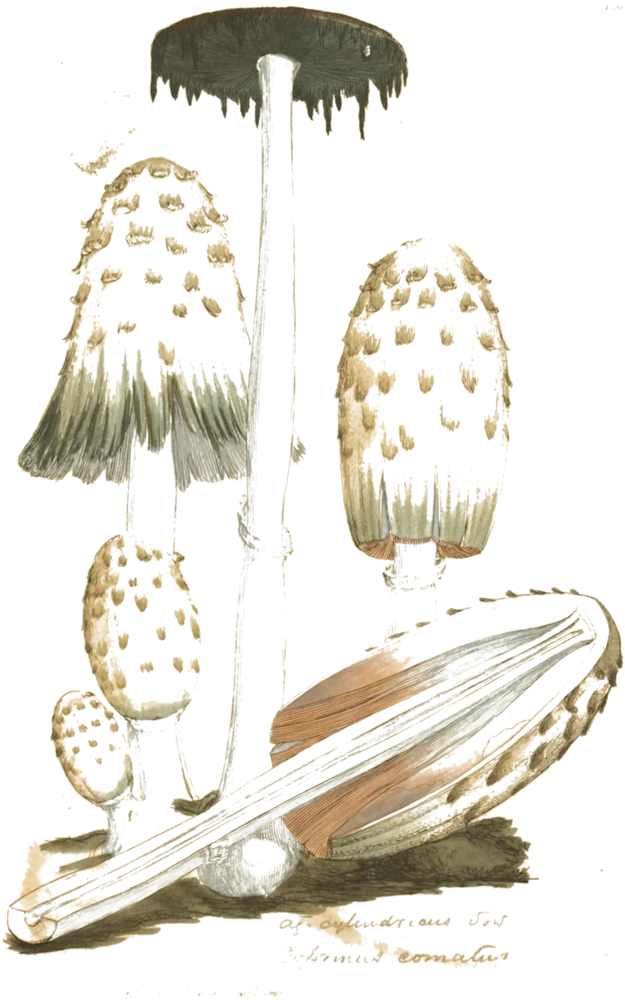

❦
❦
❦
O-BITROT
◀
▶
Default
▾
Save
Load
Delete
Ouaricon Audio
A Catalogue of Failing Media · Plate XLVII
⚙
Language
English
Français
Hover help
Off
Tab. I
— Tape
On
Prob
Stop
Drop
Wow
Hiss
Ramp
Tab. II
— CD Skip
On
Prob
Severity
Segment
Tab. III
— Vinyl
On
Prob
Speed
33⅓
45
78
rev. quantum
Pop
Wear
Warp
Tab. IV
— Packet
Off
Loss
Burst
Conceal
Silence
Repeat
Decay
Substitute
20 ms packets
Comfort
Tab. V
— Codec
Off
Line
μ-law
GSM
300–3400 Hz
Blend
AGC
Mains
50 Hz
60 Hz
hum + harmonics
Noise
Tab. VI
— Crush
Off
Bits
Rate
Jitter
Env
Dither
Tab. VII
— Rot
bit flips · sticky decode · wrong-decode stretches
Off
Prob
Depth
Sticky
Garble
Tab. VIII
— Global · Clock & Provenance
Clock
Sync
Free
1/16
1/8T
1/8
1/4T
1/4
1/2
1 bar
Seed
0000
⚄
Splices
Hard Edges
❦
crossfades bypassed when lit
Mix